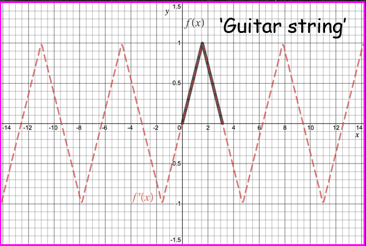

Advanced Calculus L10
- d'Alembert's solution of the wave equation
- Incorporating initial conditions
- Connections to the separable solutions
- Example
d'Alembert's solution
Note that unusually for a PDE, the wave equation can be solved to obtain a general solution
for given initial data.
Given the wave equation
\[
\frac{\partial^2 u}{\partial t^2}=c^2\frac{\partial^2 u}{\partial x^2}
\]
we can introduce new independent variables
\[
v = x+ct ~\text{ and }~ w=x-ct
\]
such that the wave equation reduces to
\[
\color{#FF33F9}{\boxed{\color{white}
\frac{\partial^2 u}{\partial v\partial w} = 0
}}
\]
To see this note
\[
u_x = \frac{\partial u}{\partial v}\frac{\partial v}{\partial x}+\frac{\partial u}{\partial w}\frac{\partial w}{\partial x}
= u_v+u_w
\]
and
\[
\begin{align*}
u_{xx} = \frac{\partial}{\partial x}(u_v+u_w)&=u_{vv}v_x+u_{vw}w_x+u_{wv}v_x+u_{ww}w_x\\
&= u_{vv}+2u_{vw}+u_{ww}
\end{align*}
\]
The last line follows since $u_{vw}=u_{wv}$
Using the exact same procedure as above (exercise)
\[
u_{tt} = c^2(u_{vv}-2u_{vw}+u_{ww})
\]
Substituting these results into the wave equation gives...
\[
\begin{align*}
u_{xx} &= u_{vv}+2u_{vw}+u_{ww}\\
u_{tt} &= c^2(u_{vv}-2u_{vw}+u_{ww})
\end{align*}
\]
So that the wave equation becomes:
\[
c^2(u_{vv}-2u_{vw}+u_{ww}) = c^2(u_{vv}+2u_{vw}+u_{ww}) \implies u_{vw}=0
\]
Or
\[
\color{red}{\boxed{\color{white}
\frac{\partial^2 u}{\partial v\partial w} = 0
}}
\]
As required.
Advanced Calculus L10
- d'Alembert's solution of the wave equation
- Incorporating initial conditions
- Connections to the separable solutions
- Example
Incorporating ICs
Suppose we have the ICs $~~u(x,0) = f(x)~~$ and $~~u_t(x,0) = g(x)$,
then from d'Alembert's solution of the wave equation we have
\[
\begin{align}
u(x,0) &= \phi(x)+\psi(x) = f(x)\\\nonumber
u_t(x,0)&= c\phi'(x)-c\psi'(x) = g(x)
\end{align}
\]
Integrating the second equation gives
\[
\begin{equation}
\phi(x)-\psi(x) = k(x_0)+\frac{1}{c}\int_{x_0}^x g(s)\mathrm{d}s
\end{equation}
\]
where $k = \phi(x_0)-\psi(x_0)$
Adding equations (1) and (2) gives
\[
2\phi(x) =f(x)+k(x_0)+\frac{1}{c}\int_{x_0}^x g(s)\mathrm{d}s
\]
Whilst subtracting (2) from (1) gives
\[
\begin{align*}
2\psi(x) &=f(x)-k(x_0)-\frac{1}{c}\int_{x_0}^xg(s)\mathrm{d}s\\
&=f(x)-k(x_0)+\frac{1}{c}\int_x^{x_0}g(s)\mathrm{d}s
\end{align*}
\]
Putting this altogther gives an expression for $u(x,t)...$
...
\[
\begin{align*}
u(x,t) &= \phi(x+ct)+\psi(x-ct)\\
&= \frac{1}{2}\left[f(x+ct)+k(x_0)+\frac{1}{c}\int_{x_0}^{x+ct} g(s)\mathrm{d}s\right]+\\
&+\frac{1}{2}\left[f(x-ct)-k(x_0)+\frac{1}{c}\int_{x-ct}^{x_0}g(s)\mathrm{d}s\right]\\
&= \color{#FF33F9}{\boxed{\color{white}
\frac{1}{2}\left[f(x+ct)+f(x-ct)\right] + \frac{1}{2c}\int_{x-ct}^{x+ct} g(s)\mathrm{d}s
}}
\end{align*}
\]
The above derivation is examinable
Advanced Calculus L10
- d'Alembert's solution of the wave equation
- Incorporating initial conditions
- Connections to the separable solutions
- Example
How does this relate to the separable solutions we found?
Suppose we solve the following wave equation using separation of variables
\[
\frac{\partial^2 u}{\partial t^2} = c^2\frac{\partial^2 u}{\partial x^2}, \quad x\in(0,L), u(0,t)=u(0,L)=0
\]
And ICs $u(x,0) = f(x)$ and $u_t(x,0)=0$ (the second for simplicity)
It
can be shown that
\[
\color{yellow}{\boxed{\color{white}
u(x,t) = \sum_{n=1}^\infty E_n\sin\left(\frac{n\pi}{L}x\right)\cos\left(\frac{n\pi}{L}t\right)
}}
\]
Now using trig identity we can write
\[
\sin\left(\frac{n\pi}{L}x\right)\cos\left(\frac{n\pi c}{L}t\right) = \frac{1}{2}\left[\sin\left(\frac{n\pi}{L}(x-ct)\right)+\sin\left(\frac{n\pi}{L}(x+ct)\right)\right]
\]
Consequently we can write our separable solution as
\[
\begin{align*}
u(x,t) &= \sum_{n=1}^\infty E_n\sin\left(\frac{n\pi}{L}x\right)\cos\left(\frac{n\pi c}{L}t\right)\\
&= \frac{1}{2}\sum_{n=1}^\infty E_n\sin\left(\frac{n\pi}{L}(x-ct)\right) + \frac{1}{2}\sum_{n=1}^\infty E_n\sin\left(\frac{n\pi}{L}(x+ct)\right)
\end{align*}
\]
Recalling that
\[
u(x,0) = \sum_{n=1}^\infty E_n\sin\left(\frac{n\pi}{L}x\right) = f(x)\qquad \text{We see that...}
\]
...
\[
\begin{align*}
u(x,t)&=\frac{1}{2}\sum_{n=1}^\infty E_n\sin\left(\frac{n\pi}{L}(x-ct)\right) + \frac{1}{2}\sum_{n=1}^\infty E_n\sin\left(\frac{n\pi}{L}(x+ct)\right)\\
&=\frac{1}{2}\left[F(x-ct)+F(x+ct)\right]
\end{align*}
\]
Here, $F$ is the odd extension of the function $f$ with period $T=2L$
Note
Advanced Calculus L10
- d'Alembert's solution of the wave equation
- Incorporating initial conditions
- Connections to the separable solutions
- Example
Let us consider Example 4.3 from the online notes, i.e. the wave equation with zero BCs and ICs given by
\[
u(x,0) = f(x) = \begin{cases}\frac{2x}{\pi}&x\in[0,\pi/2]\\\frac{2}{\pi}(\pi-x)&x\in[\pi/2,\pi]\end{cases}\\
\]
and
\[
u_t(x,0) = g(x)=0\qquad\qquad\qquad
\]
Here $L=\pi$ and $c=1$
A guitar string plucked and released from rest

This problem can be solved to obtain the solution
\[
u(x,t) = \sum_{n=1}^\infty \frac{8}{n^2\pi^2}\sin\left(\frac{n\pi}{2}\right)\sin(nx)\cos(nt)
\]
Which can be rewritten as
\[
\begin{align*}
u(x,t)&=\frac{1}{2}\sum_{n=1}^\infty \frac{8}{n^2\pi^2}\sin\left(\frac{n\pi}{2}\right)\sin(n(x-t))+\\
&\frac{1}{2}\sum_{n=1}^\infty\frac{8}{n^2\pi^2}\sin\left(\frac{n\pi}{2}\right)\sin(n(x+t))\\
&=F(x-t)+F(x+t)
\end{align*}
\]
Here $F(x)$ is the odd extension of the function $f$
The video below illustrates the point
The standing wave in black is the sum of the left and right travelling waves (blue and red, respectively)
Lecture 10 Review
- In this lecture we covered
- d'Alembert's solution of the wave equation
- Examples
- After this lecture you should
- be able to solve the 1D wave equation on an infinite domain